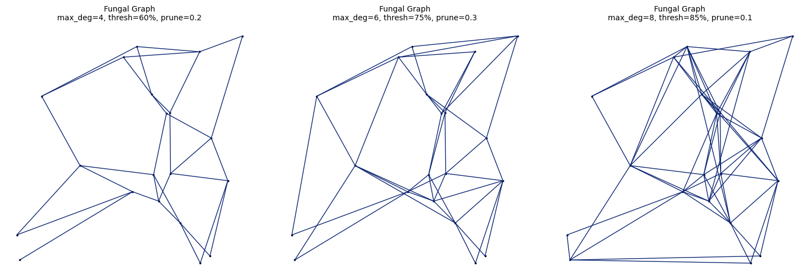

FungalGraph#
Overview#
FungalGraph implements a bio-inspired network construction algorithm that mimics fungal mycelium growth patterns. Unlike the iterative evolution of PhysarumGraph, FungalGraph uses a constructive metaheuristic approach that builds the network through a growth process, then prunes weak edges.
Algorithm Overview#
The algorithm proceeds in three phases:
Initialization Phase
Start with a PhysarumGraph backbone for basic connectivity
Compute distance matrix for all point pairs
Identify candidate edges below distance threshold
Growth Phase
Iteratively evaluate candidate edges
Add edges based on multi-objective benefit function
Enforce degree constraints (avoid star topologies)
Ensure connectivity between components
Pruning Phase
Calculate edge betweenness centrality
Protect backbone edges
Remove weakest non-backbone edges
Maintain connectivity
Benefit Function#
Edges are evaluated using a weighted combination of three factors:
Benefit(i,j) = 0.4 × distance_score + 0.3 × degree_balance + 0.3 × shortcut_benefit
where:
Distance Score:
distance_score = 1 / (d_ij + ε)
Favors short edges (more efficient connections)
Degree Balance:
degree_balance = 1 / (1 + |deg(i) - deg(j)|)
Favors connecting nodes with similar degrees
Prevents hub formation
Shortcut Benefit:
shortcut_benefit = max(0, current_path_length - 1) / n
Rewards edges that significantly shorten paths
Normalized by network size
Class Definition#
class FungalGraph(BiologicalGraph):
"""
Fungal network constructed using a bio-inspired expansion metaheuristic.
This class mimics the growth pattern of fungal networks to create
efficient, connected networks that:
- Prioritize short edges for efficiency
- Find shortest paths between node pairs
- Guarantee a single connected component
- Avoid star topologies through degree control
- Balance between cost and redundancy
"""
Constructor#
def __init__(self, setpoints,
max_degree=6,
distance_threshold_percentile=75,
growth_iterations=100,
prune_weak_factor=0.3,
sources=None,
dt=0.1, gamma=1.5, eps=1e-3, steps=200,
seed=None)
Parameters:
setpoints:SetPointsThe set of points to connect
Must be a valid
SetPointsinstance
max_degree:int, optional, default=6Maximum degree allowed per vertex
Prevents star topologies and hub formation
Typical range: 4-8
Higher values allow more connected networks
Lower values force more distributed structures
distance_threshold_percentile:float, optional, default=75Only consider edges below this percentile of all distances
Filters out long-distance connections
Typical range: 60-90
Lower values → sparser candidate set
Higher values → more candidate edges to evaluate
growth_iterations:int, optional, default=100Number of growth cycles to execute
More iterations → potentially denser networks
Typical range: 50-200
Growth may stop early if no candidates remain
prune_weak_factor:float, optional, default=0.3Fraction of non-backbone edges to prune after growth
Range: [0, 1]
0 = no pruning
0.3 = remove weakest 30% of added edges
1 = remove all non-backbone edges (extreme)
sources:list of int, optional, default=NoneSource nodes for the PhysarumGraph backbone
If None, defaults to
[0]Affects initial backbone structure
dt:float, optional, default=0.1PhysarumGraph time step parameter
Passed to backbone graph initialization
gamma:float, optional, default=1.5PhysarumGraph adaptation strength
Passed to backbone graph initialization
eps:float, optional, default=1e-3PhysarumGraph pruning threshold
Passed to backbone graph initialization
steps:int, optional, default=200PhysarumGraph evolution steps
Passed to backbone graph initialization
seed:int, optional, default=NoneRandom seed for reproducibility
Controls stochastic edge selection during growth
Set for reproducible results
Raises:
TypeError: Ifsetpointsis not aSetPointsinstance
Attributes Created:
self.max_degree:int- Maximum allowed vertex degreeself.sources:list of int- Source nodesself.dt,self.gamma,self.eps,self.steps: Backbone parameters
Methods#
_initialize_network() (Internal)#
def _initialize_network(self, distance_threshold_percentile,
growth_iterations, prune_weak_factor, seed)
Description:
Constructs the fungal network through the three-phase algorithm.

Algorithm Details:
Phase 1: Backbone Creation
# Create PhysarumGraph as initial structure
base = PhysarumGraph(setpoints, sources, ...)
# Add all backbone edges to graph
# Compute distance matrix
Phase 2: Growth
for iteration in growth_iterations:
for each candidate edge (i, j):
# Check degree constraints
if deg(i) >= max_degree or deg(j) >= max_degree:
continue
# Calculate benefit components
dist_score = 1 / (distance + ε)
degree_balance = 1 / (1 + |deg(i) - deg(j)|)
shortcut_benefit = path_improvement / n
# Weighted combination
benefit = 0.4*dist + 0.3*deg + 0.3*shortcut
# Probabilistic acceptance
if random() < benefit * 0.5:
add_edge(i, j)
Phase 3: Connectivity Enforcement
while number_of_components > 1:
# Find closest pair of components
# Add edge between them
Phase 4: Pruning
# Calculate edge betweenness
betweenness = edge_betweenness()
# Protect backbone edges
protected = backbone_edges
# Sort non-backbone by betweenness (descending)
# Keep top (1 - prune_weak_factor) fraction
# Delete the rest
evolve() (Placeholder)#
def evolve(self, steps=100)
Description:
Placeholder method required by BiologicalGraph interface. Does nothing for FungalGraph since it uses a constructive approach rather than iterative evolution.
Parameters:
steps:int, default=100Ignored (included for interface compatibility)
Note:
Unlike PhysarumGraph, FungalGraph builds its final structure during initialization. The network does not continue to evolve after creation.
Usage Examples#
Example 1: Basic Usage#
import proximitygraphs as pg
# Create points
points = pg.SetPoints.uniform_square(n=100, seed=42)
# Create Fungal graph with default parameters
graph = pg.FungalGraph(
points,
max_degree=6,
growth_iterations=100,
prune_weak_factor=0.3,
seed=42
)
# Analyze result
print(f"Nodes: {graph.n}")
print(f"Edges: {graph.m}")
print(f"Max degree: {max(graph.graph.degree())}")
print(f"Mean degree: {sum(graph.graph.degree()) / graph.n}")
# Visualize
graph.draw(title=True, details=True)
Example 2: Degree-Constrained Networks#
points = pg.SetPoints.uniform_square(n=80, seed=123)
# Strict degree constraint
strict_graph = pg.FungalGraph(
points,
max_degree=4, # Very restrictive
seed=42
)
# Relaxed degree constraint
relaxed_graph = pg.FungalGraph(
points,
max_degree=8, # More permissive
seed=42
)
print(f"Strict - Edges: {strict_graph.m}, Max deg: {max(strict_graph.graph.degree())}")
print(f"Relaxed - Edges: {relaxed_graph.m}, Max deg: {max(relaxed_graph.graph.degree())}")
Example 3: Sparsity Control#
points = pg.SetPoints.normal_dist(n=60, seed=999)
# Sparse network (aggressive pruning)
sparse = pg.FungalGraph(
points,
distance_threshold_percentile=60, # Fewer candidates
prune_weak_factor=0.5, # Remove 50% of added edges
seed=42
)
# Dense network (minimal pruning)
dense = pg.FungalGraph(
points,
distance_threshold_percentile=90, # More candidates
prune_weak_factor=0.1, # Remove only 10%
seed=42
)
print(f"Sparse: {sparse.m} edges")
print(f"Dense: {dense.m} edges")
Example 4: Parameter Sweep#
from proximitygraphs import Experiment
exp = Experiment(
name="FungalGraph Parameter Study",
point_config={'method': 'uniform_square', 'params': {'n': 100}},
n_simulations=15,
seed=42
)
# Vary max_degree
for deg in [4, 6, 8]:
exp.add_graph_config(
pg.FungalGraph,
name=f'Fungal-deg{deg}',
max_degree=deg,
seed=42
)
# Vary pruning
for prune in [0.1, 0.3, 0.5]:
exp.add_graph_config(
pg.FungalGraph,
name=f'Fungal-prune{prune}',
prune_weak_factor=prune,
seed=42
)
results = exp.run()
exp.compare_metrics(['n_edges', 'mean_degree', 'density'])
Example 5: Comparison with Other Graphs#
points = pg.SetPoints.uniform_square(n=100, seed=777)
# Create multiple graph types
fungal = pg.FungalGraph(points, seed=42)
physarum = pg.PhysarumGraph(points, sources=[0], steps=200)
mst = pg.MST(points)
delaunay = pg.DelaunayG(points)
gabriel = pg.GG(points)
# Compare properties
graphs = {
'Fungal': fungal,
'Physarum': physarum,
'MST': mst,
'Delaunay': delaunay,
'Gabriel': gabriel
}
for name, g in graphs.items():
print(f"{name:12} - Edges: {g.m:4}, Mean deg: {sum(g.graph.degree())/g.n:.2f}, "
f"Max deg: {max(g.graph.degree()):2}")
Example 6: Reproducibility with Seeds#
points = pg.SetPoints.uniform_square(n=50, seed=100)
# Same seed → identical results
g1 = pg.FungalGraph(points, seed=42)
g2 = pg.FungalGraph(points, seed=42)
print(f"Graph 1: {g1.m} edges")
print(f"Graph 2: {g2.m} edges")
print(f"Identical: {g1.m == g2.m and g1.graph.get_edgelist() == g2.graph.get_edgelist()}")
# Different seed → different results
g3 = pg.FungalGraph(points, seed=99)
print(f"Graph 3: {g3.m} edges")
print(f"Different from 1: {g3.m != g1.m or g3.graph.get_edgelist() != g1.graph.get_edgelist()}")
Performance Characteristics#
Time Complexity: O(iterations × candidates + n² + m·log(m))
Iterations × candidates: Growth phase
n²: Distance matrix computation
m·log(m): Betweenness calculation
Space Complexity: O(n²)
Full distance matrix required
Edge list and attributes
Typical Running Times (approximate):
Points (n) |
Iterations |
Candidates |
Time |
|---|---|---|---|
50 |
100 |
~1000 |
2-3s |
100 |
100 |
~4000 |
8-12s |
200 |
100 |
~15000 |
45-60s |
100 |
200 |
~4000 |
15-20s |
Comparison: FungalGraph vs PhysarumGraph#
Feature |
FungalGraph |
PhysarumGraph |
|---|---|---|
Approach |
Constructive |
Iterative evolution |
Degree control |
Built-in (max_degree) |
Emergent |
Determinism |
Stochastic (with seed) |
Deterministic |
Network density |
Controllable (pruning) |
Emergent (eps) |
Evolution after init |
No |
Yes (can continue) |
Typical edge count |
Medium |
Low to medium |
Backbone |
PhysarumGraph |
Delaunay/Complete |
Best for |
Balanced networks |
Optimal paths |
Tips and Best Practices#
Choosing max_degree
# For sensor networks (distributed) graph = pg.FungalGraph(points, max_degree=4) # For robust communication (redundancy) graph = pg.FungalGraph(points, max_degree=8) # For general purpose graph = pg.FungalGraph(points, max_degree=6) # Default
Controlling Network Density
# Sparse network sparse = pg.FungalGraph( points, distance_threshold_percentile=65, growth_iterations=50, prune_weak_factor=0.4 ) # Dense network dense = pg.FungalGraph( points, distance_threshold_percentile=85, growth_iterations=150, prune_weak_factor=0.1 )
Ensuring Reproducibility
# Always set seed for reproducible results graph = pg.FungalGraph(points, seed=42)
Balancing Growth and Pruning
# Aggressive growth, minimal pruning graph1 = pg.FungalGraph( points, growth_iterations=200, prune_weak_factor=0.1 ) # Conservative growth, aggressive pruning graph2 = pg.FungalGraph( points, growth_iterations=50, prune_weak_factor=0.5 )
Monitoring Network Properties
graph = pg.FungalGraph(points, seed=42) # Degree distribution degrees = graph.graph.degree() print(f"Degree stats: min={min(degrees)}, max={max(degrees)}, " f"mean={sum(degrees)/len(degrees):.2f}") # Edge lengths lengths = graph.lengths print(f"Length stats: min={lengths.min():.3f}, max={lengths.max():.3f}, " f"mean={lengths.mean():.3f}") # Connectivity print(f"Connected components: {graph.cc}") print(f"Network is connected: {graph.cc == 1}")
Common Issues and Solutions#
Issue 1: Network too sparse
# Solution: Increase candidates and reduce pruning
graph = pg.FungalGraph(
points,
distance_threshold_percentile=85, # More candidates
prune_weak_factor=0.1, # Less pruning
growth_iterations=150 # More growth
)
Issue 2: Network too dense
# Solution: Decrease candidates and increase pruning
graph = pg.FungalGraph(
points,
distance_threshold_percentile=65, # Fewer candidates
prune_weak_factor=0.4, # More pruning
growth_iterations=50 # Less growth
)
Issue 3: High-degree hubs forming
# Solution: Decrease max_degree
graph = pg.FungalGraph(
points,
max_degree=4 # Stricter constraint
)
Issue 4: Slow performance on large networks
# Solution: Reduce candidate set and iterations
graph = pg.FungalGraph(
points,
distance_threshold_percentile=70, # Fewer candidates
growth_iterations=75 # Fewer iterations
)
Algorithm Variants#
The current implementation can be modified for specific use cases:
Deterministic Variant:
# Remove randomness by always accepting high-benefit edges
# Modify benefit acceptance: if benefit > 0.5 instead of random < benefit
Aggressive Growth:
# Grow until hitting 3× backbone size
# Current: stops if m > len(base_edges) * 3
Custom Benefit Weights:
# Current: 0.4*dist + 0.3*degree + 0.3*shortcut
# Could be parameterized for different optimization goals
References#
Bebber, D. P., Hynes, J., Darrah, P. R., Boddy, L., & Fricker, M. D. (2007). Biological solutions to transport network design. Proceedings of the Royal Society B, 274(1623), 2307-2315.
Fricker, M. D., Boddy, L., Nakagaki, T., & Bebber, D. P. (2017). Adaptive biological networks. Adaptive Networks: Theory, Models and Applications, 51-70.
Tero, A., et al. (2010). Rules for biologically inspired adaptive network design. Science, 327(5964), 439-442.
Referenced for PhysarumGraph backbone